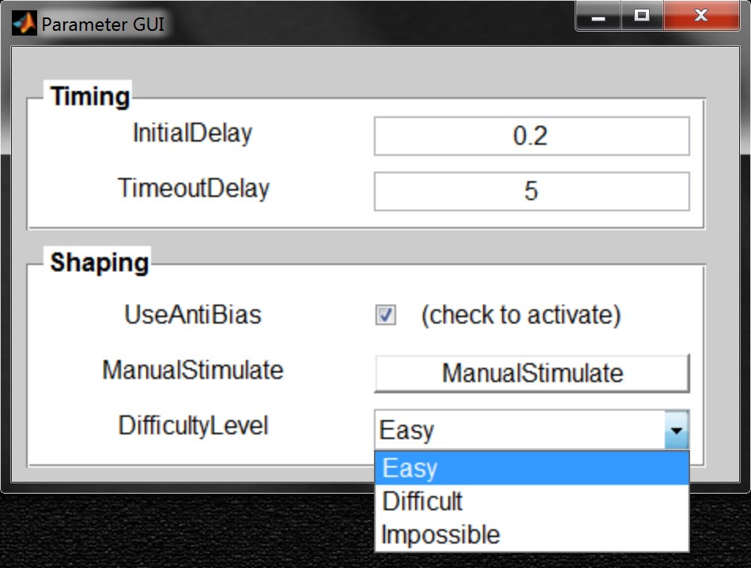
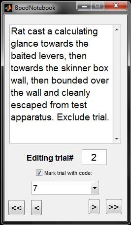
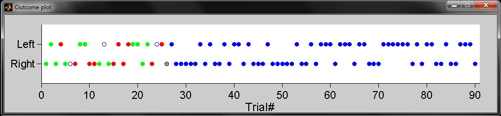
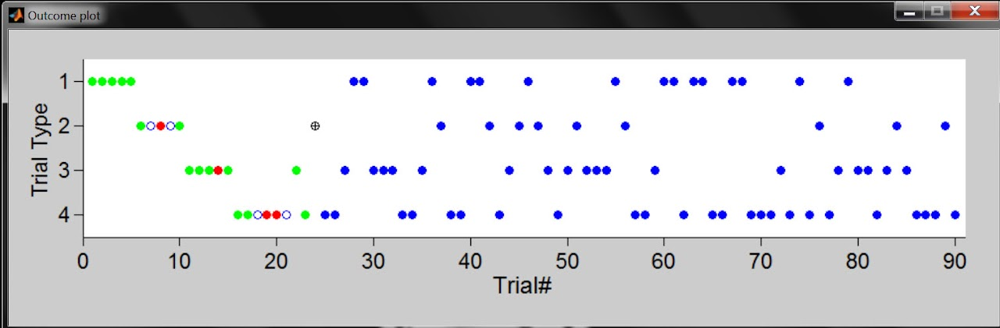
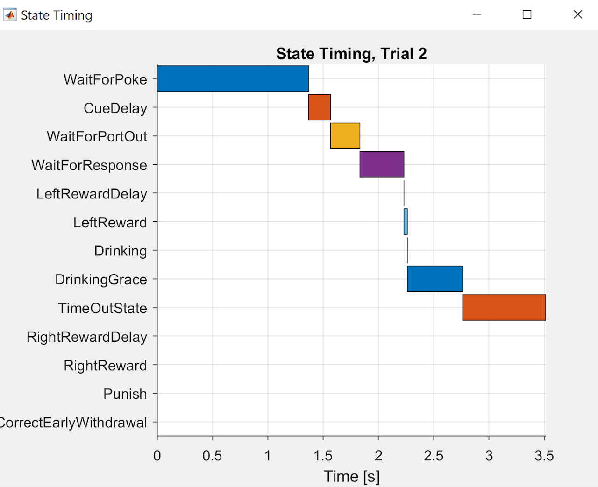

General Plugins
BpodParameterGUI()
Description
Displays the settings from the "GUI" subfield of a settings struct. Supports advanced GUI parameters and pushbutton call of user functions.
- The GUI subfield names (i.e. X in Settings.GUI.X) are displayed as labels on the left. Edit boxes populated with parameter values for each X are shown on the right.
- In the current version, only numerical parameters are valid.
- By default, text edit boxes are used to show parameters. Other UI types can be specified.
- By default, all parameters are clustered on one UI panel. Parameter groups can be specified.
- When synced, the GUI will display any programmed updates to the parameter values since the last sync.
- If the user manually edited a parameter, this becomes the new value irrespective of automated changes.
Syntax
On the first call (before Main Loop):
On subsequent calls (once per trial):
Parameters
- Settings: A
structof settings and parameters with at least some numeric parameters in the subfield "GUI" - Optionally, a GUIMeta field can be included in Settings
- GUIMeta subfields are formatted as
GUIMeta.(parameterName).(attribute) = value - GUIMeta attributes are:
- Style: 'popupmenu', 'checkbox', 'pushbutton', 'text', 'edit' - (See Examples for usage)
- String: a cell array of strings for popumenu
- GUIMeta subfields are formatted as
- Optionally, a GUIPanels fiels can be included in Settings
- GUIPanels subfields are formatted as
GUIPanels.(panelName) = {parameterNames}
- GUIPanels subfields are formatted as
Return
- A settings structure, updated with any parameter changes manually entered by the user in the GUI
Examples
Intializes a UI for a Bpod setting struct on protocol launch, and syncs it on each of 10 trials
% Import settings or populate if empty
S = BpodSystem.ProtocolSettings; % Load settings chosen in launch manager into current workspace as a struct called S
if isempty(fieldnames(S)) % If an empty struct, populate struct with default settings
S.GUI.SineWaveFrequency = 500; % Frequency of stimulus
S.GUI.SpeakerType = 1; % Type of speaker
end
% Initialize parameter GUI plugin
BpodParameterGUI('init', S);
% Run 10 trials:
for currentTrial = 1:10
S = BpodParameterGUI('sync', S); % Sync parameters with BpodParameterGUI plugin
%...Create, send and run state matrix,
%...add and save events
%...update S with new parameters based on performance
end
Initialize parameters with a more complex settings GUI.  'text' and 'edit' Styles are undocumented.
'text' and 'edit' Styles are undocumented.
S = struct;
S.nonUIsetting = 23; % A setting not in S.GUI, so not included on the UI
% Numeric parameters with default style
S.GUI.InitialDelay = 0.2;
S.GUI.TimeoutDelay = 5;
% Checkbox/togglebox between value of 1 and 0
S.GUI.UseAntiBias = 1;
S.GUIMeta.UseAntiBias.Style = 'checkbox';
% Create a button that callbacks a function when pressed
S.GUI.ManualStimulate = 'ManualStimulation(1)'; % Callback function for pushbutton
S.GUIMeta.ManualStimulate.Style = 'pushbutton';
% Create dropdown/popupmenu with specific options
S.GUI.DifficultyLevel = 1; % Index of the options in .String to start with
S.GUIMeta.DifficultyLevel.Style = 'popupmenu';
S.GUIMeta.DifficultyLevel.String = {'Easy', 'Difficult', 'Impossible'}; % Define options in box
% Group parameters into panels
S.GUIPanels.Timing = {'InitialDelay', 'TimeoutDelay'};
S.GUIPanels.Shaping = {'UseAntiBias', 'ManualStimulate', 'DifficultyLevel'};
BpodParameterGUI('init', S);

In this example the S.GUI.ManualStimulate = 'ManualStimulate(1) together with S.GUIMeta.ManualStimuate.Style = 'pushbutton' yields a button that will activate (callback) a function when pressed.
PsychToolboxSoundServer()
Note
PsychToolboxSoundServer will continue to be supported for legacy installations., but is not considered deprecated. For nearly all applications, the Bpod HiFi Module is a superior method for delivering auditory stimuli. We strongly recommend the HiFi module for new setups, and new projects on existing setups.
Description
Plays sounds from the governing computer using an Asus Xonar DX, DSX or U7 sound cards. Also compatible with HTOmega Fenix (this card is necessary for PsychToolbox versions 3.0.14 and later).
- Low latency and jitter (7-8ms) are achievable when running Bpod on Ubuntu 14.04 with the low-latency kernel and PsychToolbox installed. Comparable performance is possible on a Windows 7-10 computer (Core i7, >=8GB Ram) with only MATLAB running, no processing-intensive background processes, and the latest ASUS ASIO driver installed.
- Sounds are sampled at 192kHz, 7 channel, with left and right speakers on channels 1 and 2 ("front/left" and "front/right").
- By default, channels 3-5 output a 1ms TTL pulse at the onset of each sound. Connecting any of these channels to a BNC or wire input channel will provide a precise record of sound onset. On Linux, to ensure that the pulse can be read by Bpod, verify that you have configured ALSAmixer correctly during installation.
- Up to 32 sounds can be loaded before each trial, and are known to the sound server as sounds 1-32. The number of sounds is currently limited in software to 32, but theoretically depends on available RAM. Sounds can be quickly re-loaded between trials to change their waveform.
- Sounds are triggered by sending a soft code back to the governing computer from a trial's state matrix, and calling PsychToolboxSoundServer from a predetermined soft code handler function.
Syntax
% To initialize:
PsychToolboxSoundServer('init')
% To load a sound:
PsychToolboxSoundServer('load', SoundID, Waveform)
% To play a sound:
PsychToolboxSoundServer('play', SoundID)
% To stop playback:
PsychToolboxSoundServer('stop', SoundID)
% To stop all playback:
PsychToolboxSoundServer('stopall')
% To close the sound server:
PsychToolboxSoundServer('close')
Parameters
- SoundID: A byte specifying which sound to load, play or clear (1-32).
- Waveform: A vector containing the waveform of the sound to load. Samples must be between -1 and 1, and the sampling rate is 192kHz.
- For mono, use a 1Xn vector. Both speakers will play the sound.
- For stereo, use a 2Xn vector. Row 1 is the left channel, and row 2 is right.
Returns
- None
Example
This code creates a noise waveform, loads it to the sound server, plays it and then closes the server.
SoundDuration = 3; SamplingRate = 192000; % Set parameters
MyWaveform = rand(1,SoundDuration*SamplingRate); % Create waveform
PsychToolboxSoundServer('init'); % Initialize sound server
PsychToolboxSoundServer('load', 1, MyWaveform); % load the sound
PsychToolboxSoundServer('play', 1); % Play the sound
pause(3);
PsychToolboxSoundServer('close'); % Close sound server
This code loads a sound, sets a soft-code handler to play it, and sets a soft code to be sent from a state matrix.
%%-------In main protocol file-------
SoundDuration = 3; SamplingRate = 192000; % Set parameters
MyWaveform = rand(1,SoundDuration*SamplingRate); % Create waveform
PsychToolboxSoundServer('init'); % Initialize sound server
PsychToolboxSoundServer('load', 3, MyWaveform); % load the sound
sma = NewStateMatrix();
sma = AddState(sma, 'Name', 'State1', ...
'Timer', 1,...
'StateChangeConditions', {'Tup', 'exit'},...
'OutputActions', {'SoftCode', 3});
BpodSystem.SoftCodeHandlerFunction = 'SoftCodeHandler_PlaySound';
%%-------Soft code handler file in protocol folder (SoftCodeHandler_PlaySound.m)-------
function SoftCodeHandler_PlaySound(SoundID)
if SoundID ~= 255
PsychToolboxSoundServer('Play', SoundID);
else
PsychToolboxSoundServer('StopAll');
end
PsychToolboxVideoPlayer()
Description
Plays video stimuli on a second video monitor attached to the Bpod computer using PsychToolbox.
A "Sync Patch" is automatically generated for each video frame. The patch is set to a high pixel intensity on the first frame, and alternates between "off" and high intensity for subsequent frames. This allows an optical sensor mounted on the corner of the screen (i.e. Frame2TTL) to indicate the actual onset time of each video frame to an acquisition system, providing high precision reaction time and visual evidence update measurements.
- Videos are matrices defined in MATLAB.
- Each video frame is a matrix of 8-bit pixel values (0-255).
- Single frames may be a grayscale intensity matrix of dimensions (Y, X) or a color matrix of dimensions (Y, X, 3)
- The three color layers are intensity matrices for red, green and blue layers respectively.
- Multiple frames are stacked in an additional dimension to create a video.
- e.g. a color video is a 4-D matrix: Y x X x 3 x Nframes
- Videos are loaded to the player and assigned an index (1 - 100).
- Videos can be played by index, allowing a byte to specify which video to start.
- Text strings can be loaded by index in place of videos, to display prompts to human subjects
- By default, playing a video blocks the MATLAB command line.
- In default mode, a loop loads frames into the video buffer. Frames are presented at regular intervals.
- In timer mode, a MATLAB timer callback loads each frame into the video buffer. This makes the command line available during playback.
Object
After running Bpod, a PsychToolboxVideoPlayer object is initialized with the following syntax:
V = PsychToolboxVideoPlayer(MonitorID, ViewPortSize, ViewPortOffset, SyncPatchSize, SyncPatchYOffset)
The PsychToolboxVideoPlayer is controlled in 2 ways: - Setting the PsychToolboxVideoPlayer object's fields - Calling the PsychToolboxVideoPlayer object's functions
Object Fields
- Window
- PsychToolbox Window object (for advanced usage, see documentation)
- DetectedFrameRate
- Detected frame rate of the target display in Hz
- Videos
- Cell array containing videos loaded with obj.loadVideo()
- TextStrings
- Cell array containing text strings loaded with obj.loadText()
- TimerMode
- TimerMode can be one of the following:
- 0 (video buffer fed by loop, blocking the MATLAB command line)
- 1 (video buffer fed by MATLAB timer object, non-blocking playback)
- TimerMode can be one of the following:
- ShowViewportBorder
- ShowViewportBorder can be one of:
- 0 (no border)
- 1 - a thin gray border is drawn around the viewport (video portion of the window). - This is useful for initial layout, and should be disabled during stimulus presentation
- ShowViewportBorder can be one of:
- ViewPortDimensions
- X,Y Dimensions of videos that can be loaded (specified on startup)
- SyncPatchIntensity
- Intensity of the sync patch pixels. Range = [0, 255]. Default = 128.
- SyncPatchActiveArea
- Fraction of the sync patch dimensions set to white when drawing a white patch. Range = [0, 1].
- Permanently dark pixels surrounding the optical sensor can help to hide the sync patch from the test subject and improve tolerance for sensor misalignment
Object Functions
- loadVideo(videoIndex, video)
- Loads a video to the PsychToolboxVideoPlayer, formatted for playback with correct offset and sync patch
- videoIndex= index of the video (1-100)
- video = a Y x X x N MATLAB array of pixel intensities (0-255)
- Y is the height of the video. It must match height of viewport. The height is given in ViewPortDimensions(2)
- X is the width of the video. It must match width of viewport. The width is given in ViewPortDimensions(1)
- N is the number of frames in the video
- Color videos may be loaded as Y x X x 3 x N, where the third dimension are red, green and blue color layers respectively
- loadText(textIndex, textString, [textStringLine2], [fontSize], [leftOffset])
- Loads 1 or 2 lines of text to display on a single video frame (for online human subject instructions)
- textIndex = index of the text string (1-100). A video on the player cannot have the same index.
- textString = a character array of text to display
- textStringLine2 (optional) - a character array to display on line 2
- fontSize = font size of text to display
- play(stimulusIndex)
- Plays video or text frame at the specified index, loaded previously with loadVideo() or loadText().
- If obj.TimerMode is set to 0, this function will block the MATLAB command line until video playback is complete.
- stop()
- Stops ongoing video playback if obj.TimerMode is set to 1 (non-blocking playback)
Cleanup
- Clear the PsychToolboxVideoPlayer object with clear:
- Clearing the object closes the PsychToolbox window.
- If a PsychToolboxVideoPlayer object is created as a local variable inside a MATLAB function, the object is cleared automatically when the function returns.
Example
This code creates a noise video, loads it to the video player, plays it and then closes the player.
MyVideo = (rand(480,640, 30)*255); % Create noise video
% Initialize video player for a 640 x 480 video, with a 30 x 10 sync patch
V = PsychToolboxVideoPlayer(2, [640 480], [0 0], [30 10], 0);
% Load noise video into player at index 1
V.loadVideo(1, myVideo);
% play the video
V.play(1);
% close the video player
clear V
An example behavior protocol using PsychToolboxVideoServer is given in the Bpod_Gen2 repository, here.
BpodNotebook
Description
Displays a notebook, for taking notes on individual trials, or marking them digitally for classification based on manual criteria.
- The written notes are saved in the BpodSystem.Data struct as a cell array of strings, with one cell per trial.
- The digital marks are saved in the data struct as a vector named "TrialMarkerCodes".

- The "Editing Trial#" window shows the trial whose notes and markers are currently being edited.
- The single arrow buttons <, > select the next or previous trial to edit respectively.
- The double arrow buttons <<, >> select the first or current trial to edit respectively.
- Each time the function is called, the notes in the data are overwritten with the GUI data (i.e. previous trials can be selected and edited)
Syntax
On first call (before main loop):
On subsequent calls (once per trial):
Parameters
- Data: A struct of session data (typically BpodSystem.Data)
Returns
- NewData: A struct with the current notebook data added.
Example
This code launches the notebook GUI, and adds its entire set of notes to the data on each trial.
BpodNotebook('init');
for currentTrial = 1:1000
% ...Create, send and run state matrix, add and save events.
BpodSystem.Data = BpodNotebook('sync', BpodSystem.Data);
end
SideOutcomePlot()
Description
Plots correct sides and trial outcomes for a two-sided decision task.
- Future trials are indicated with filled blue circles.
- The current trial is indicated with a black cross.
- Correct trials are indicated in green. Filled circles indicate rewarded trials, unfilled circles indicate unrewarded trials..
- Error trials are indicated in red. Filled circles indicate punished trials, unfilled circles indicate unpunished trials.
- Trials with no decision response are indicated as unfilled blue circles.
The plot is shown here for an example session:

Syntax
On first call (before first trial):
On subsequent calls (once per trial):
Parameters
- AxisHandle: The handle of the axes where you intend display the plot
- TrialSides: A vector listing the correct response side for all trials in the session. For each trial in the vector, right = 0, left = 1.
- CurrentTrial: The current trial number (will be marked with a cross)
- Outcomes: A vector for each completed trial, listing outcomes:
- -1 = error, unpunished (unfilled red circle)
- 0 = error, punished (filled red circle)
- 1 = correct, rewarded (filled green circle)
- 2 = correct, unrewarded (unfilled green circle)
- 3 = no response (unfilled black circle)
Returns
- None
Example
This code initializes the outcome plot in its own window, and updates it on each trial. All correct trials are rewarded, and all error trials are punished.
TrialTypes = ceil(rand(1,5000)*2); % Trial types randomly interleaved, type 1 or 2.
% type 1 = rewarded left. type 2 = rewarded right.
%% Initialize plots
% Create a figure for the outcome plot
BpodSystem.ProtocolFigures.OutcomePlotFig = figure('Position', [200 200 1000 200],'name','Outcome plot',... 'numbertitle','off', 'MenuBar', 'none', 'Resize', 'off');
% Create axes for the outcome plot
BpodSystem.GUIHandles.OutcomePlot = axes('Position', [.075 .3 .89 .6]);
SideOutcomePlot(BpodSystem.GUIHandles.OutcomePlot,'init',2-TrialTypes);
% Run 1000 trials:
for currentTrial = 1:1000
% ...Create, send and run state machine with a state called "Reward"
% and a state called "Punish", add and save events...
Outcomes = zeros(1,BpodSystem.Data.nTrials);
for x = 1:BpodSystem.Data.nTrials
if ~isnan(BpodSystem.Data.RawEvents.Trial{x}.States.Reward(1))
Outcomes(x) = 1;
elseif ~isnan(BpodSystem.Data.RawEvents.Trial{x}.States.Punish(1))
Outcomes(x) = 0;
else
Outcomes(x) = 3;
end
end
SideOutcomePlot(BpodSystem.GUIHandles.OutcomePlot,'update',BpodSystem.Data.nTrials+1,2-TrialTypes,Outcomes)
end
TrialTypeOutcomePlot()
Description
Plots trial types and trial outcomes for a customizable window of trials surrounding the current trial.
- Future trials are indicated with filled blue circles.
- The current trial is indicated with a black cross.
- Correct trials are indicated in green. Filled circles indicate rewarded trials, unfilled circles indicate unrewarded trials..
- Error trials are indicated in red. Filled circles indicate punished trials, unfilled circles indicate unpunished trials.
- Trials with no decision response are indicated as unfilled blue circles.
The plot is shown here for an example session. The current trial shown is trial #24, trial type 2:

Syntax
On first call (before first trial):
On subsequent calls (once per trial):Parameters - AxisHandle: The handle of the axes where you intend display the plot
- TrialTypes: A vector listing the trial types for all trials in the session. Each trial type must be a positive integer.
- CurrentTrial: The current trial number (will be marked with a cross)
- Outcomes: A vector for each completed trial, listing outcomes:
- -1 = error, unpunished (unfilled red circle)
- 0 = error, punished (filled red circle)
- 1 = correct, rewarded (filled green circle)
- 2 = correct, unrewarded (unfilled green circle)
- 3 = no response (unfilled black circle)
Returns
- None
Example
This code initializes the trial type outcome plot in its own window, and updates it on each trial. All correct trials are rewarded, and all error trials are punished with time-out.
TrialTypes = ceil(rand(1,5000)*2); % Trial types randomly interleaved, type 1 or 2
% Initialize plots
BpodSystem.ProtocolFigures.OutcomePlotFig = figure('Position', [200 200 1000 200],'name','Trial type outcome plot',... 'numbertitle','off', 'MenuBar', 'none', 'Resize', 'off'); % Create a figure for the outcome plot
BpodSystem.GUIHandles.OutcomePlot = axes('Position', [.075 .3 .89 .6]); % Create axes for the trial type outcome plot
TrialTypeOutcomePlot(BpodSystem.GUIHandles.OutcomePlot,'init',TrialTypes);
% Run 1000 trials:
for currentTrial = 1:1000
%...Create, send and run state matrix with a state called "Reward"
% and a state called "Punish", add and save events...
Outcomes = zeros(1,BpodSystem.Data.nTrials);
for x = 1:BpodSystem.Data.nTrials
if ~isnan(BpodSystem.Data.RawEvents.Trial{x}.States.Reward(1))
Outcomes(x) = 1;
elseif ~isnan(BpodSystem.Data.RawEvents.Trial{x}.States.Punish(1))
Outcomes(x) = 0;
else
Outcomes(x) = 3;
end
end
TrialTypeOutcomePlot(BpodSystem.GUIHandles.OutcomePlot,'update',BpodSystem.Data.nTrials+1,TrialTypes,Outcomes)
end
StateTiming()
Description
The StateTiming plot shows the time course of states in the previous trial.
StateTiming was contributed by Florian Rau in Poulet Lab at MDC Berlin.

Syntax
Parameters
- None
Returns
- None
Example
In the protocol's main loop, this code must follow each trial's call to AddTrialEvents().